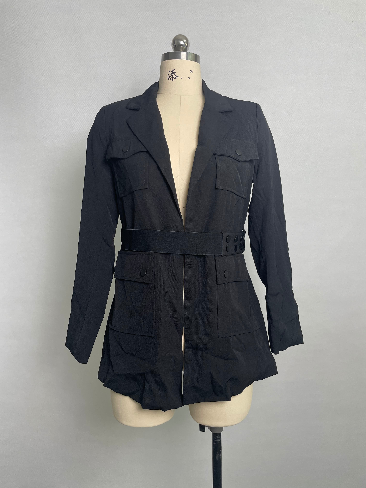

Why Modern Tailoring Is Harder Than It Looks
Modern tailoring in womenswear depends on precision. A tailored product can look minimal on the hanger, but refined tailoring requires consistent shape, clean seam finish, stable pressing results and balanced fit across sizes. Premium brands working on luxury essentials and modern wardrobe categories usually need more sample discipline, not less.
Core Categories: Tailored Pants, Wool Trousers and Outerwear
The most common tailored categories include tailored pants, wool trousers, designer skirts and contemporary outerwear. Some brands also combine these with modern basics and elevated essentials to create a more versatile dressing system. A strong tailored program usually supports a neutral wardrobe, timeless silhouettes and repeat bestsellers across multiple seasons.
Fabric, Structure and Fit Control
Tailored apparel needs earlier decisions on fabric weight, drape, recovery, lining, interfacing and pressing behavior. Wool trousers and structured pants also require careful review of waist, hip, rise, inseam and leg shape. Contemporary outerwear adds more complexity through shell fabric, lining, interlining, shoulder balance, sleeve pitch and hardware finish.
How Tailoring Supports Quiet Luxury and Timeless Fashion
Many brands positioned around quiet luxury, timeless fashion and premium ready-to-wear rely on modern tailoring as the core of the collection. These products often sell because they feel polished and versatile rather than loud. That means the factory must protect consistent proportions, workmanship and finishing so the clothes match the intended brand standard.
How to Send a Better Tailoring Inquiry
If you are developing tailored pants, wool trousers or contemporary outerwear, send silhouette references, target fabric, measurement points, closure detail, lining expectation, size range, quantity and packaging needs together. Better inputs help the factory evaluate refined tailoring more accurately and reduce avoidable sample revisions.
Need a production partner for your tailored womenswear collection? Cyncho supports women pants manufacturing, women jacket production, women dress development, women clothing manufacturing and private label apparel production.